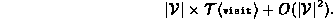
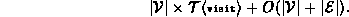

Data Structures and Algorithms
with Object-Oriented Design Patterns in Java
Data Structures and Algorithms
with Object-Oriented Design Patterns in JavaThe breadth-first traversal enqueues each node in the graph at most once. When a node is dequeued, all the edges emanating from that node are considered. Therefore, a complete traversal enumerates every edge in the graph.
The actual running time of the breadth-first traversal method depends on the graph representation scheme used. The worst-case running time for the traversal of a graph represented using an adjacency matrix is

When adjacency lists are used, the worst case running time for the breadth-first traversal method is

If the graph is sparse, then  .
Therefore, if a sparse graph is represented using adjacency lists
and if
.
Therefore, if a sparse graph is represented using adjacency lists
and if  ,
the worst-case running time of the breadth-first traversal
is just
,
the worst-case running time of the breadth-first traversal
is just  .
.
 Copyright © 1998 by Bruno R. Preiss, P.Eng. All rights reserved.
Copyright © 1998 by Bruno R. Preiss, P.Eng. All rights reserved.